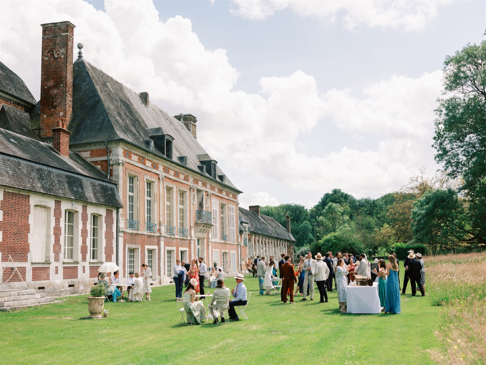
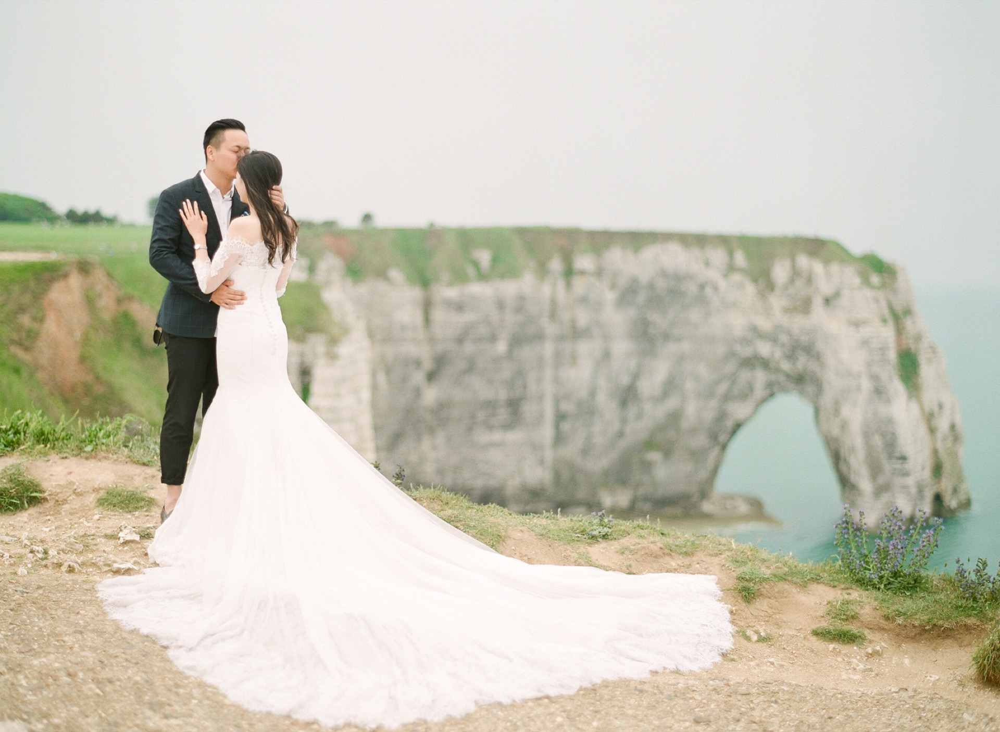
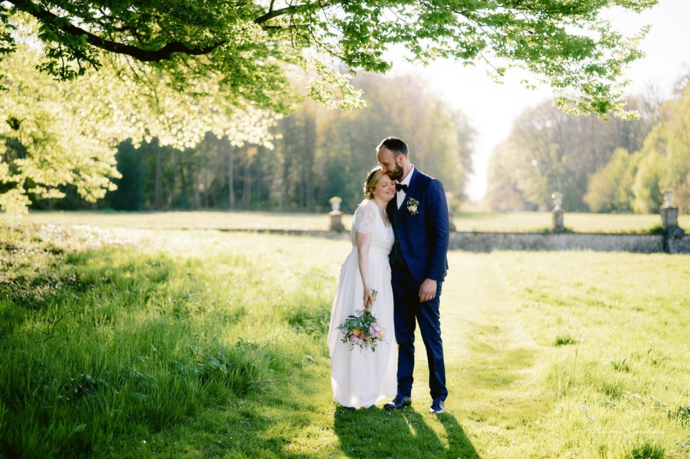
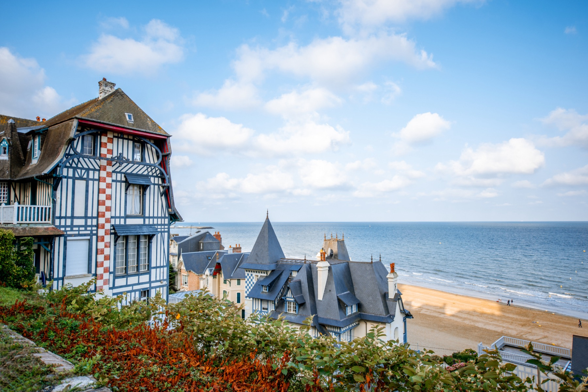
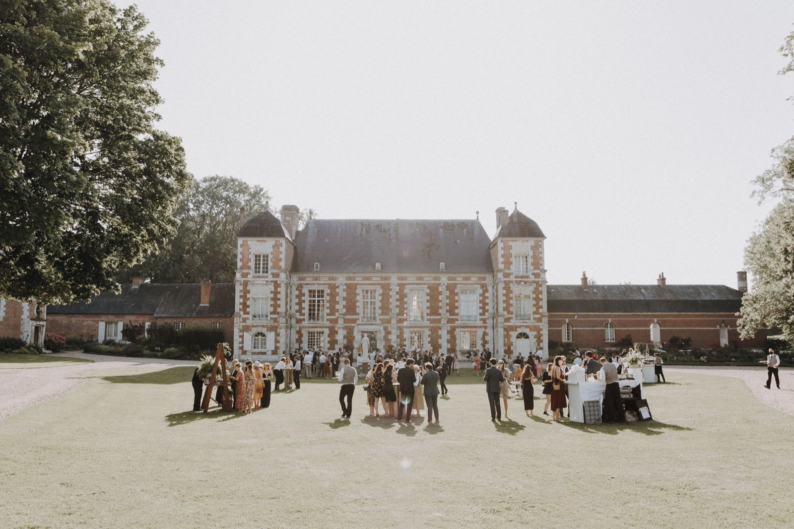
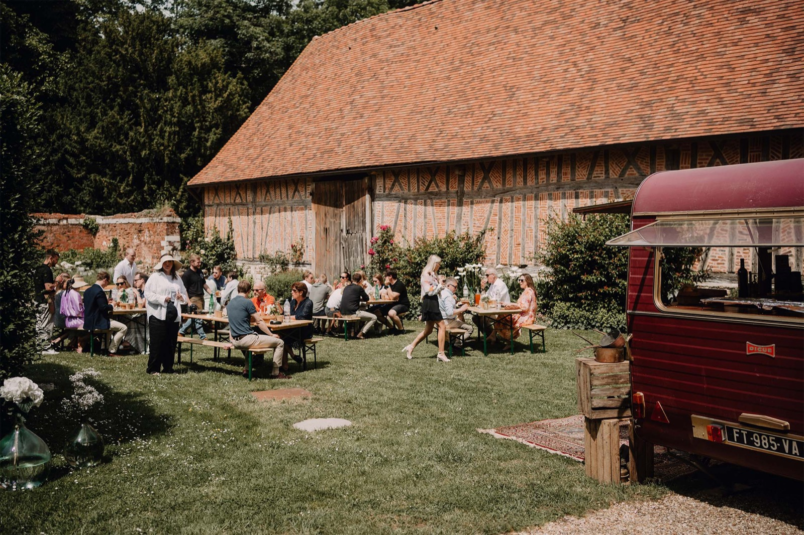
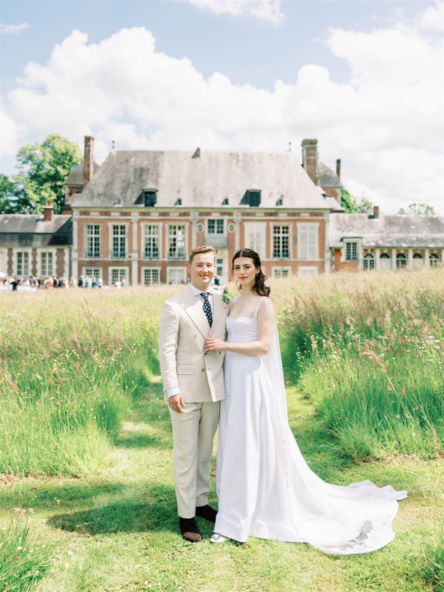
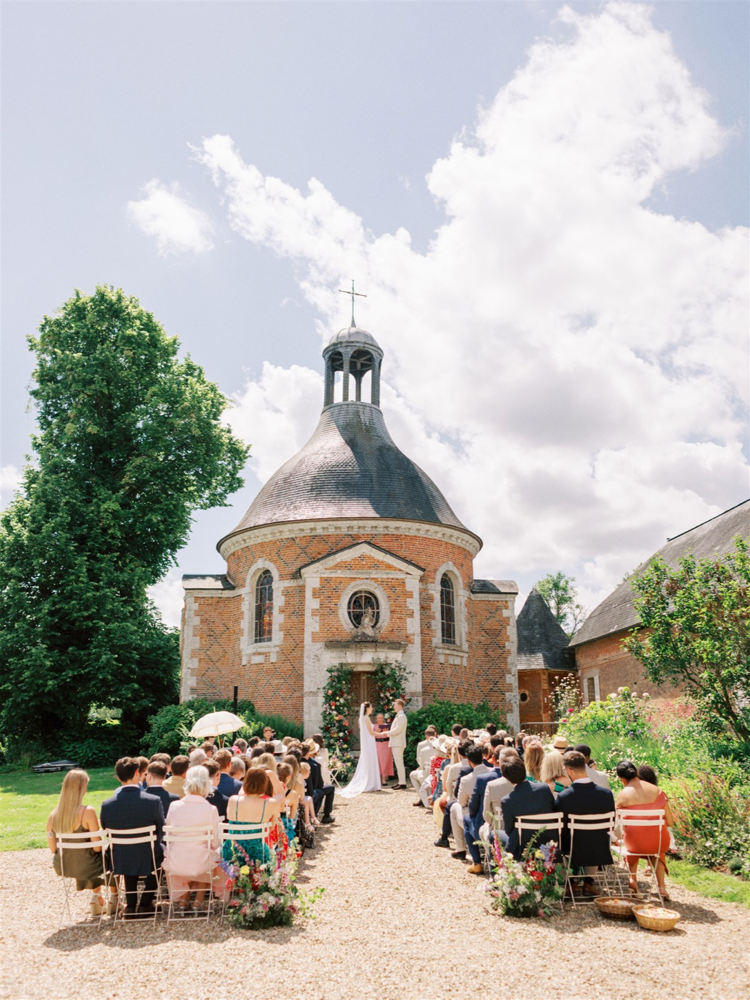

16th-Century Château
Château de Bonnemare
Radepont, Eure — the Andelle Valley
A Renaissance château on 22 hectares, with a private chapel, walled gardens, and two suites classified as historic monuments.

Normandy, France
Wedding in Normandy curates château weddings across the region — from the Renaissance halls of Château de Bonnemare to the Belle Époque coast of Deauville — for couples who want the day to feel inevitable, not arranged.
Philosophy
A château is not a backdrop. It is four hundred years of families, harvests, and weddings, pressed into stone and never quite settled. That history is what makes the day feel larger than the two of you — not because it is grand, but because it is real.
A château does not perform elegance. It simply has never known anything else.
We do not rent a room and dress it as a château. We work with properties whose architecture, land, and light already carry that weight — a staircase that has seen a hundred brides descend it, a park laid out for processions long before yours, a chapel built for exactly this.

0th
Century, Renaissance-Built
0
Hectares of Park & Garden
0
Guest Beds On-Site
0
Historic Monument Suites
Our Venues

16th-Century Château
Radepont, Eure — the Andelle Valley
A Renaissance château on 22 hectares, with a private chapel, walled gardens, and two suites classified as historic monuments.

Coastal Destination
Côte Fleurie
For couples drawn to the coast: Belle Époque villas, boardwalk light, and the particular elegance of Deauville out of season.
Gallery




When to Marry
The orchards blossom and the light stays soft until nine in the evening. Cool enough for a jacket at the ceremony, still bright for dancing outdoors after dinner.
Booking window — 9 to 12 months ahead
Long, unhurried evenings — the classic Normandy wedding season, and the one that books out first. Warm enough for the garden long after the toasts are done.
Booking window — 12 to 18 months ahead
Low gold light, and the harvest just finished in the orchards. Our favourite season for photographs, and considerably easier to secure a date.
Booking window — 6 to 9 months ahead
Fires lit in every room, and Deauville nearly to yourselves. Not for every couple — but the ones who choose it never regret it.
Booking window — 3 to 6 months ahead
Process
A conversation, not a questionnaire. We learn what matters to you before we mention a single venue.
We shortlist properties and vendors matched to your date, guest count, and sensibility, and build the framework of the week.
You walk the shortlist in person, meet the châtelains and the craftspeople, and choose with the place in front of you, not a brochure.
We manage every arriving guest, delivery, and hour of the schedule, so the only thing you attend to is each other.
“We found a corner of the château no one had shown us on the tour, and somehow it was exactly right. Every guest asked how we'd discovered it.”
Eleanor & James — Château de Bonnemare
Request an Invitation
Tell us a little about the day you're imagining. We reply personally, usually within two days.